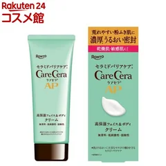
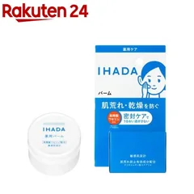
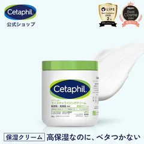
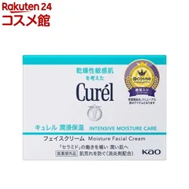
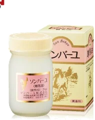
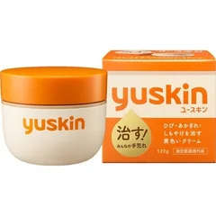
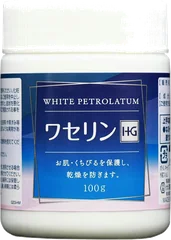

7位

ケアセラ
APフェイス&ボディクリーム
70g
¥1,720税込・出典掲載価格
書き込みの声
- 顔も体もこれ1本で済ませてる人が多い
- お風呂上がりに全身に塗ってもベタつかず朝まで乾かないって声
気になる声香りが少しあるので無香料がいい人は好みが分かれる
販売価格・容量・送料はリンク先でご確認ください
THE COSME EDIT / 2026.09.17
ガルちゃんの乾燥肌トピ4つ（書き込み839件）で名前が多く挙がった保湿を7つ、挙がった回数の順に。動画では書き込みの声を会話にして追いかけています。使った人の声のまとめで、結果を保証するものではありません。乾燥がひどい場合は皮膚科へ。
07 ITEMS 動画で紹介した商品
価格は出典掲載時のものです。楽天の現在価格とは異なる場合があります。

ケアセラ
70g
¥1,720税込・出典掲載価格
書き込みの声
気になる声香りが少しあるので無香料がいい人は好みが分かれる
販売価格・容量・送料はリンク先でご確認ください

イハダ
20g
¥1,485税込・出典掲載価格
書き込みの声
気になる声20gと小さいので全身には向かない
販売価格・容量・送料はリンク先でご確認ください

セタフィル
566g
¥2,335税込・出典掲載価格
書き込みの声
気になる声大きいので顔用だけの人には多すぎるかも
販売価格・容量・送料はリンク先でご確認ください

キュレル
40g
¥2,970税込・出典掲載価格
書き込みの声
気になる声しっとりが強めなので夏は重いと感じる人も
販売価格・容量・送料はリンク先でご確認ください

ソンバーユ
70mL
¥2,200税込・出典掲載価格
書き込みの声
気になる声独特の匂いが気になる人はいる。無香料でも少し残る
販売価格・容量・送料はリンク先でご確認ください

ユースキン
120g
¥1,570税込・出典掲載価格
書き込みの声
気になる声手荒れ用なので顔には量を少なめに、こすらず押さえる
販売価格・容量・送料はリンク先でご確認ください

大洋製薬
100g
¥950税込・出典掲載価格
書き込みの声
気になる声塗りすぎるとベタつく。米粒1つ分を手のひらで温めてから
販売価格・容量・送料はリンク先でご確認ください
SOURCE & NOTES
集計期間：2026年9月17日に確認（書き込みは2023年10月〜2026年1月）
価格は2026年9月17日に楽天の商品ページで確認した税込価格です。順位は書き込みで名前が挙がった回数の順で、良し悪しの順位ではありません。